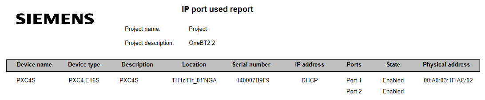

端口设置的移交报告
Read back data
- The device is connected.
Connecting to devices
- Go to Startup.
- Open the Configure and download task.
- Select the Discovered devices tab.
- Right-click the device and select Upload.
- The device runtime instance data is uploaded to the project.
Create a handover configuration report
- Read back data is performed to get the current port status.
- Go to Building.
- Open the Building structure task.
- Right-click a hierarchy level and select Reports.
- The Select report dialog box opens.
- Select the All devices from the project option.
- Select IP port used report.
- Click OK.
- The IP port used report displays.
- Devices without Ports and Status information must be upload again.
